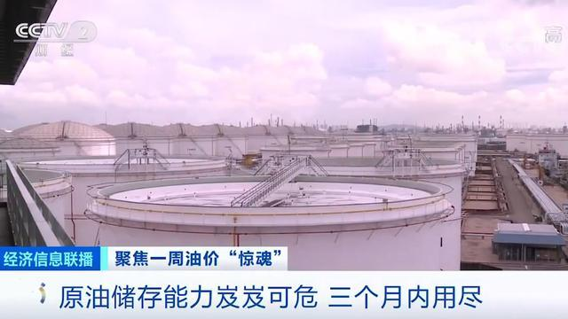

油が入れられない！世界の原油貯蔵空間は3ヶ月以内に尽きるだろう
OPECが発表した最新月報によると、2020年通年の世界原油需要は前年同期比690万バレル/日低下し、原油需要は30年ぶりの低水準に下がる見通しだ。原油需要は断崖的に下落し、世界の原油貯蔵空間もあまり残っていない。シンガポールからオクラホマ州のクッシングまで、タンクには原油、ガソリン、その他の製品が積んであります。中東の石油貯蔵能力は楽観的ではなく、世界最大の産油国である米国、戦略原油備蓄基地も間もなく底をつく。 スタンダード分析によると、世界の原油などのエネルギーの余剰貯蔵能力は14億バレルで、そのうち陸地の余剰貯蔵能力は約10億バレル、海上の余剰貯蔵能力は約4億バレルと推定されている。OPECの十分な減産を考慮しても、これらの貯蔵スペースは2~3ヶ月以内に尽きます。